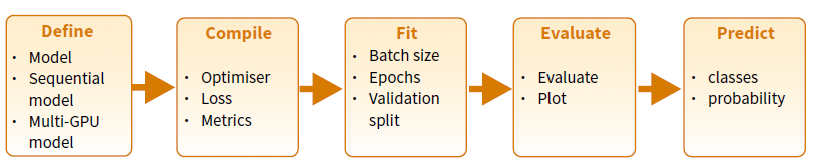
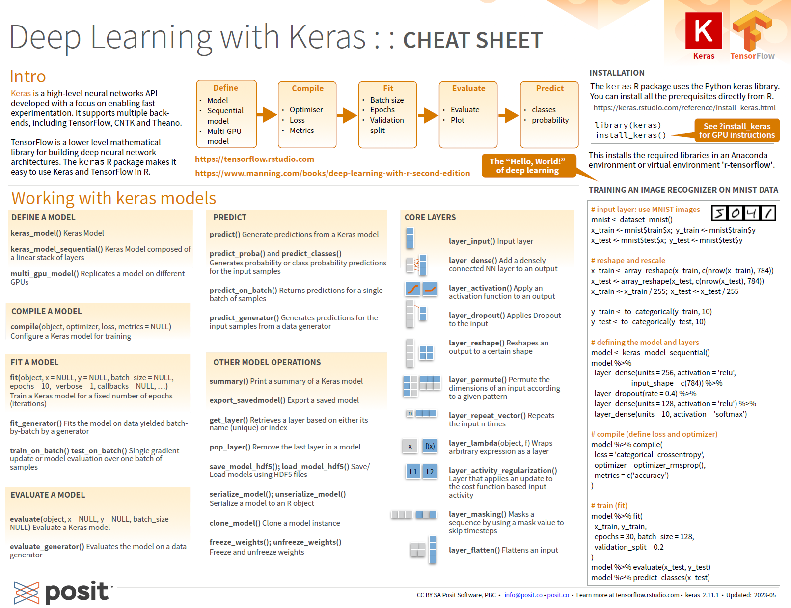
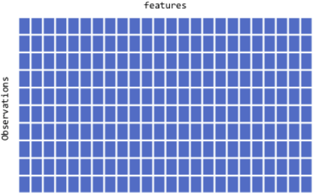
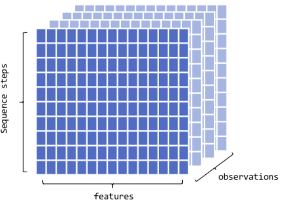
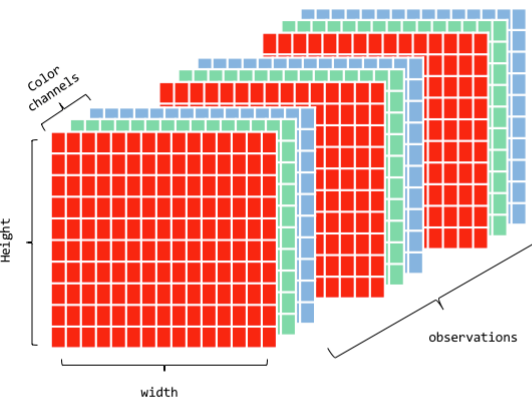
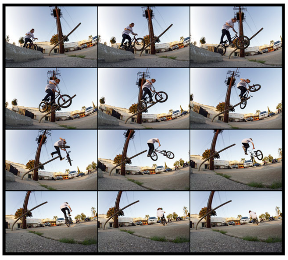
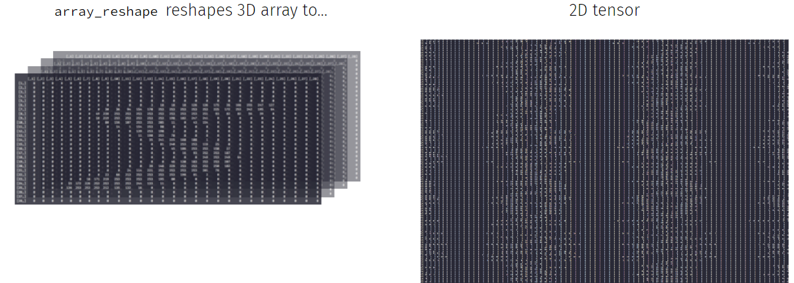

Deep Neural Networks with Keras in R
Deep Learning with R
We assume familiarity with:
- Statistical learning basics
- Classification/Regression problems,
- Model building, Model evaluation
- Deep Neural Networks (even more basic)
- Artificial neural networks, layers, activation function, gradient methods.
- Statistical learning basics
And we focus on how to build and use deep neural networks using R
Outline
- Which software (and Hw) for Deep Learning
- Python vs R
- Tensorflow, Keras, Pytorch and many more
- Deep learning, vectorization and Tensors
- Vectorization for efficient computation
- Tensors for data representation and manipulation
- The Machine learning (Dl?) Workflow
- The general ML workflow
- A Keras pipeline
Software for Deep Learning
TensorFlow
- An open-source deep learning framework
- Developed by Google
- with a comprehensive ecosystem of tools and resources for building and deploying machine learning models.
Pytorch
Open-source deep learning framework
known for its dynamic computational graph feature
and user-friendly interface
developed by Facebook’s AI Research lab.

Keras
High-level neural networks API
written in Python
runs on top of TensorFlow, CNTK, or Theano,
emphasizes simplicity and ease of use.

Deep learning with R
As of 2023, common approach is
- Tensorflow + Keras from within R
- Using python in the background
Multiple possible installations
Possibly, the simplest is go to:
The Keras pipeline
- Training and using a model in keras is intended to be done through the usual steps of a ML worfflow

A keras cheat sheet

Hello world of deep learning (1)
# load packages
library(keras)
# input layer: use MNIST images
mnist <- dataset_mnist()
x_train <- mnist$train$x; y_train <- mnist$train$y
x_test <- mnist$test$x; y_test <- mnist$test$yHello world of deep learning (2)
# reshape and rescale
x_train <- array_reshape(x_train, c(nrow(x_train), 784))
x_test <- array_reshape(x_test, c(nrow(x_test), 784))
x_train <- x_train / 255; x_test <- x_test / 255
y_train <- to_categorical(y_train, 10)
y_test <- to_categorical(y_test, 10)Hello world of deep learning (3)
# defining the model and layers
model <- keras_model_sequential()
model %>%
layer_dense(units = 256, activation = 'relu', input_shape = c(784)) %>%
layer_dropout(rate = 0.4) %>%
layer_dense(units = 128, activation = 'relu') %>%
layer_dense(units = 10, activation = 'softmax')Hello world of deep learning (4)
# compile (define loss and optimizer)
model %>% compile(
loss = 'categorical_crossentropy',
optimizer = optimizer_rmsprop(),
metrics = c('accuracy')
)Hello world of deep learning (5)
# train (fit)
model %>% fit(
x_train, y_train,
epochs = 30, batch_size = 128,
validation_split = 0.2
)Hello world of deep learning (6)
model %>% evaluate(x_test, y_test)
model %>% predict_classes(x_test)One must-do digression: Tensors
Deep learning is filled with the word “tensor”,
- Not to talk of TensorFlow
What are Tensors any way?
- R users: familiar with vectors (1-d arrays) and matrices (2-d arrays).
- Tensors extend this concept to higher dimensions.
- Can be seen as multi-dimensional arrays that generalize matrices.
Why tensors?
Working with tensors has many benefits:
- Generalization: Tensors generalize vectors and matrices to an arbitary number of dimensions,
- Flexibility: can hold a wide range of data types.
- Speed: Use of tensors facilitates fast, parallel processing computations.
One and two dimensional tensors
Vectors:rank-1 tensors.
Matrices: rank-2 tensors.

Rank three tensors
Arrays in layers.
Typic use: Sequence data
- time series, text
- dim = (observations, seq steps, features)
Examples
- 250 days of high, low, and current stock price for 390 minutes of trading in a day; dim = c(250, 390, 3)
- 1M tweets that can be 140 characters long and include 128 unique characters; dim = c(1M, 140, 128)

Rank four tensors
Layers of groups of arrays
Typic use: Image data
- RGB channels
- dim = (observations, height, width, color_depth)
- MNIST data could be seen as a 4D tensor where color_depth = 1

Rank five tensors
Typic use: Video data
- samples: 4 (each video is 1 minute long)
- frames: 240 (4 frames/second)
- width: 256 (pixels)
- height: 144 (pixels)
- channels: 3 (red, green, blue)
Tensor shape (4, 240, 256, 144, 3)

One can always reshape
Each DNN model has a given architecture which usually requires 2D/3D tensors.
If data is not in the expected form it can be reshaped.

See Deep learning with R for more.